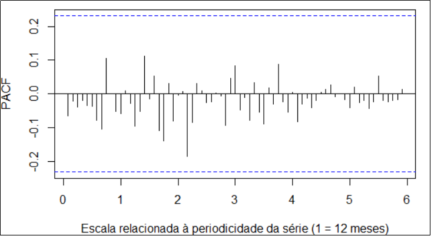

June 22, 2023
Tomaz Lanza
Actuary and Consultant
Member n° 3963 of the Brazilian Institute of Actuary (IBA)
Belo Horizonte, Minas Gerais, Brazil
Ref:
Projections
for Brazilian Main
Inflation
Indexes
Regarded reader,
The following is an on-demand study that was addressed to assist the directory board
of a mutual-assistance organization related to a high bureaucracy
career of Minas Gerais state.
As requested, the projected indexes are:
I. National Broad Consumer Price Index
(IPCA); and
II. General Market Price Index (IGP-M).
The indexes projections are for the months June up to September 2023, utilizing data from 72 months - June 2017 up to May 2023
The Contextualization section and the presentation of the results are located right at the
beginning of this text, and the methodological discussions on which
the projections are based can be found in the Attachment
section - which translation to English is still ongoing.
Table of contents
2. PRESENTATION AND RESULTS DISCUSSIONS
ATTACHMENT - METHODOLOGICAL AND DATA DISCUSSIONS
1. CONTEXTUALIZATION
1.1. In this first part, a brief exposition is presented regarding: (i) the behavior of the referred inflation indices
during the comprised time span; and (ii) the range and limitations of the methodologies used for
predictions.
1.2. The referred indices exhibit relatively distinct behaviors. As mentioned in the Attachment part, the IPCA series tracks price fluctuations only for retail consumers, thus it is generally smaller than IGP-M both in magnitude and
volatility - given that IGP-M most relevantly measures wholesale price
changes, and is more sensitive to several factors such as exchange
rates dynamics and pressures on production-side costs, in
general.
1.3. In the analyzed series, three moments can be
noticed when there seems to be a greater tendency towards extreme
values: a general strike led by truck drivers that took place in may
2018; and both the start and the second wave of COVID-19 pandemic -
which occurred in mid-2020 and at the beginning of 2021, respectively.
Throughout 2021, the IPCA 12-month variation displayed notable volatility
and exhibited an upward trend, surpassing the 10% level in the first half of 2022, but tending to diminish
onwards.
Regarding IGP-M, its 12-month variation peaked at the extreme value
of 37.04% in May 2021, and has been falling since then, entering
in negative territory - which is also called deflation - with the - 4.47%
value observed in May 2023. Graphs illustrating the 12-month variation for both indices can be found in Item 2 - Presentation and Result Discussion.
1.4. An important point concerning the projections
is that they were made with the use of techniques that only consider
functions of historical values of the indices for predictions,
so it’s possible that they are not capturing recent trends related to
influential factors affecting price behaviors - for instance,
the current expectations of future prices (BACEN, s. d.), for which there appears to be strong evidence of declining:
Picture I - Median for inflation expectations from published by Bacen
Source: Brazilian Central Bank. Available at:
<https://www.bcb.gov.br/content/focus/focus/R20230616.pdf/>. Access in June 2023.
In Picture I, which is an excerpt from the Boletim Focus (BACEN, 2023) survey
published on June 19th, 2023, it is shown that the medians for expectations on the variation of both IPCA and IGP-M throughout 2023 have been declining for
five
and
ten weeks, respectively. Additionally, it can be observed that the median expectation of the 12-month variation of IGP-M fell below the negative
threshold, reaching -1.21% in June 2023.
Consequently, since the data used for predictions only extend until May 2023, the predicted values might not be capturing the new
information available, and might be somewhat overestimating future
inflation.
2. PRESENTATION AND RESULT DISCUSSION
2.1. IGP-M
The following graph and table show the IGP-M projection results:
Graph I - Projection of IGP-M 12-month variation until September
2023
Elaboration: Author, June 2023.
Legend:
purple line: time series;
blue line: projected values;
red dotted lines: 95% confidence prediction intervals.
“Years†axis scale: 1 = 12 months; 0.5 = 6 months.
The predicted punctual mean values, represented by the blue line in Graph I, indicate a continued decrease in the IGP-M 12-month variation in
both June and July 2023; then, they signal for an interruption of the
long decline - which has been ongoing since May 2021, as previously
mentioned.
Despite the halt in the fall of IGP-M 12-month variation, if its
premises hold, the model points to a relevant likelihood that this cumulative variation will remain in negative levels
until the end of the projection interval, which is September 2023.
The following Table I allows for complementary analyses:
Table I - IGP-M 12-month variation:
history and projections
|
Month |
Lower bound of 95%-confident prediction interval (%)
|
12-month variation (%) |
Upper bound of 95%-confident prediction interval (%)
|
|
Jan/2022 |
- |
16.91 |
- |
|
Feb/2022 |
- |
16.12 |
- |
|
Mar/2022 |
- |
14.77 |
- |
|
Apr/2022 |
- |
14.66 |
- |
|
May/2022 |
- |
10.72 |
- |
|
Jun/2022 |
- |
10.70 |
- |
|
Jul/2022 |
- |
10.08 |
- |
|
Aug/2022 |
- |
8.59 |
- |
|
Sep/2022 |
- |
8.25 |
- |
|
Oct/2022 |
- |
6.52 |
- |
|
Nov/2022 |
- |
5.90 |
- |
|
Dec/2022 |
- |
5.45 |
- |
|
Jan/2023 |
- |
3.79 |
- |
|
Feb/2023 |
- |
1.86 |
- |
|
Mar/2023 |
- |
0.17 |
- |
|
Apr/2023 |
- |
-2.17 |
- |
|
May/2023 |
- |
-4.47 |
- |
|
Jun/2023 |
-8.13 |
-6.47 |
-4.81 |
|
Jul/2023 |
-9.88 |
-6.52 |
-3.10 |
|
Aug/2023 |
-10.68 |
-5.61 |
-0.35 |
|
Sep/2023 |
-10.75 |
-3.92 |
3.30 |
Elaboration: Author, June 2023.
Legend:
blue cells: historic values; pink cells: projected values.
It’s important to clarify that the prediction intervals - which indicate the theoretical probability of the estimates
capturing the ‘true’ index values, given all the assumptions holding - have their range severely increased as the projections get further from the last month for which
there is data; thus, their utility diminishes as projections go into
the future. The theoretical probability used for the intervals
shown above, also called confidence level, is 95%.
Based on all the exposition, it is regarded as most likely
scenario the IGP-M 12-month variation
remaining in negative levels for the next months, even if its
values have an increase. This understanding is harmonic with the projected values
displayed in Table I.
Finally, it’s important to state that a less likely scenario of a
sharp rise in IGP-M 12-month variation should not be completely
discarded, given that IGP-M series presents a relatively high volatility, and, as has already been mentioned, given the index sensitivity to
factors such as exchange rates variations; fluctuations of prices of
commodities and other inputs; and climate and geopolitical issues, among others.
2.2. IPCA
The following graph and table presents the results for IPCA series
projection:
Graph II - Projection of IPCA 12-month variation until September
2023
Elaboration: Author, June 2023.
Legend:
purple line: historic values;
blue line: projected values;
red-dotted line: 95%-confident prediction intervals.
Scale for “Years†axis:
1 = 12 months; 0.5 = 6 months.
The projection concerning the IPCA deems likely an interruption of
the long fall that has been occurring since the end of the first
semester of 2022. It also considers likely a relatively sharp raise in
IPCA, for which the 12-month variation would surpass the 5% threshold.
Table II - IPCA 12-month variation: history and projections
|
Month |
Lower bound of 95%-confident prediction interval (%)
|
12-month variation (%) |
Upper bound of 95%-confident prediction interval (%)
|
|
Jan/2022 |
- |
10.38 |
- |
|
Feb/2022 |
- |
10.54 |
- |
|
Mar/2022 |
- |
11.30 |
- |
|
Apr/2022 |
- |
12.13 |
- |
|
May/2022 |
- |
11.73 |
- |
|
Jun/2022 |
- |
11.89 |
- |
|
Jul/2022 |
- |
10.07 |
- |
|
Aug/2022 |
- |
8.73 |
- |
|
Sep/2022 |
- |
7.17 |
- |
|
Oct/2022 |
- |
6.47 |
- |
|
Nov/2022 |
- |
5.90 |
- |
|
Dec/2022 |
- |
5.79 |
- |
|
Jan/2023 |
- |
5.77 |
- |
|
Feb/2023 |
- |
5.60 |
- |
|
Mar/2023 |
- |
4.65 |
- |
|
Apr/2023 |
- |
4.18 |
- |
|
May/2023 |
- |
3.94 |
- |
|
Jun/2023 |
2.79 |
3.58 |
4.37 |
|
Jul/2023 |
3.01 |
4.69 |
6.39 |
|
Aug/2023 |
2.94 |
5.53 |
8.16 |
|
Sep/2023 |
2.80 |
6.30 |
9.89 |
Elaboration: Author, June 2023.
Legend:
blue cells: historic values; pink cells: projected values.
Regarding the IPCA projection, as with the IGP-M, it should be
reminded that it is not computing the recent trend of smaller
inflation expectations; consequently, the projected values could be
overestimated. It is also worth noticing the new trend of inflation expectations might be correlated with
variables that contribute to less inflation volatility and are not being captured by the model.
Lastly, after all that has been exposed concerning the projections,
it is considered that the most likely scenario for the behavior of the
IPCA 12-month variation in the next months is not significantly
surpassing the 5% threshold. So, given this scenario, this would mean
that the ponctual projections related to August and September might be
overestimated by around 1 percentage point.
3. FINAL CONSIDERATIONS
3.1. It is important to
state that the content discussed in Contextualization
part is considered fundamental for the understanding of the results presentation.
3.2. The results presented
are based on the assumptions of the econometric models developed,
which are discussed in the following Attachment part.
3.3. The projections are
based on the time range of the input data, so that any changes on it
will affect the presented results.
Best regards,
Tomaz Lanza
Actuary and Consultant
Member n° 3963 of the Brazilian Institute of Actuary (IBA)
ATTACHMENT - METHODOLOGICAL AND DATA DISCUSSIONS
1. IGP-M
1.1. SERIES ANALYSIS
1.1.1. Descriptive analysis
The original series consists of monthly IGP-M percentage variation
from June 2017 to May 2023, totalizing 72 months, or the last 5 years,
of available data.
Primeiramente, faz-se uma análise descritiva da série em
estudo, que inclui análises visuais e por meio de medidas de
posição e dispersão do conjunto de dados.
Gráfico III - Variação mensal IGP-M (em
%)
Elaboração: Autor, junho/2023.
Fonte: FGV. Retirado de: ‘https://sindusconpr.com.br/igp-m-fgv-309-p’. Acesso em: junho/2023.
A série apresenta considerável volatilidade e, somente
através de uma análise visual, não parece possível
verificar a constância de suas média e variância ao
longo do período, ou verificar algum comportamento sazonal
aparente. Seguem medidas descritivas da série:
Quadro III - Estatísticas descritivas da série original
(em %)
|
Mínimo |
1º Quartil |
Mediana |
Média |
3° Quartil |
Máximo |
Amplitude |
Desvio Padrão |
|
-1,840 |
0,065 |
0,620 |
0,774 |
1,387 |
4,340 |
6,180 |
1,201 |
Elaboração:
Autor, junho/2023.
Vê-se que, apesar de que 50% das observações
estão contidas no intervalo de 0,065% a 1,387%, há
observações tão extremas quanto -1,840% e 4,34%; tal
fato, em conjunto com desvio-padrão de 1,201%, ilustra a relativa
volatilidade da série.
1.1.2. Investigando autocorrelação
Em seguida, avaliou-se a autocorrelação entre as
observações da série. Similarmente a uma medida de
correlação entre duas variáveis, que quantifica a
força da relação linear entre elas, a Função de Autocorrelação (ACF) quantifica a relação linear entre valores da
série temporal e valores passados (HYNDMAN e ATHANASOPOULOS, 2018).
Quando a série possui tendência, as
autocorrelações para valores de meses relativamente recentes
tendem a ser grandes e positivas, pois tais valores tendem a possuir
magnitude similar. Então, a ACF também é útil para
indicar características sazonais da série, através de
valores significantes para os meses que são múltiplos da frequência sazonal (HYNDMAN
e ATHANASOPOULOS, 2018).
Gráfico IV - Função de autocorrelação
(ACF) para a variação mensal do IGP-M
Elaboração:
Autor, junho/2023.
O resultado sugere que, para um dado mês, há
correlação significante entre este e os quatro meses
anteriores adjacentes. Conforme será explorado no item 1.3. deste Anexo, o resultado pode sugerir um modelo com componente Média Móvel (MA)(4) para a
série - significando que o modelo usaria, como variáveis
preditoras, um ou mais erros dos momentos passados, que são a
diferença teórica entre a média da série e o valor
efetivamente observado.
Considerou-se também outra importante medida de
correlação: a Função de Autocorrelação Parcial (PACF).
O gráfico da PACF também mostra a correlação
entre uma série temporal e seus valores passados, mas de modo
parcial, isolando as correlações dos meses com
distância temporal menor (UDIT, 2022).
Tratando de outro modo, o gráfico da PACF mostra a
relação linear parcial, ou direta, entre o valor de um dado
mês e o valor de um mês anterior a este, por filtrar os
efeitos indiretos das datas intermediárias entre os dois pontos
no tempo. Tal medida pode ser importante para identificar as
relações mais importantes para se levar em conta na
modelagem da série, bem como para identificação de
padrões sazonais nas observações (UDIT, 2022).
Para um modelo de caráter Autoregressivo (AR), que possui
valores passados da série como variáveis exógenas, ou
independentes, a PACF indica, a partir de qual momento no tempo, as
correlações diretas entre os meses passam a ser
insignificantes - e a ordem, ou o tamanho, do modelo será
obtida a partir do números de meses com correlações parciais significantes
(PENNSYLVANIA STATE UNIVERSITY, 2023).
Gráfico V - Função de autocorrelação
parcial (PACF) para variação mensal do IGP-M
Elaboração:
Autor, junho/2023.
O resultado sugere que, para um dado mês, há
correlação significante entre este e o mês
imediatamente anterior. Assim, o resultado aponta para um modelo Autoregressivo (AR)(1), o que
será discutido no subitem 1.3. deste Anexo.
1.1.3. Checando a estacionariedade
Uma série temporal é classificada como estacionária se
suas propriedades - como o valor esperado - independem do momento no
qual a série é observada. Mais precisamente, se é uma série temporal estacionária, então, para
todo , a distribuição de probabilidade de independe de . Assim, séries que apresentam tendência ou sazonalidade
não são estacionárias, pois tais características
afetarão os valores das séries em diferentes momentos do
tempo︎(HYNDMAN e ATHANASOPOULOS, 2023).
A fim de checar a estacionariedade da série, foi usado um teste
comum para tal finalidade, chamado teste Dickey-Fuller Aumentado (ADF) (FOMBY, 2018). Os “lags”, ou quantidade de meses anteriores, testados
foram 1 (um) e 4 (quatro). Tais valores foram obtidos,
respectivamente, a partir do resultado da PACF e a partir da
fórmula padrão, para essa quantidade, da função adf.test
do pacote tseries do software R.
Augmented Dickey-Fuller Test
data: serieIGPM
Dickey-Fuller = -2.5074, Lag order = 1, p-value = 0.3687
alternative hypothesis: stationary
Augmented Dickey-Fuller Test
data: serieIGPM
Dickey-Fuller = -2.0465, Lag order = 4, p-value = 0.5564
alternative hypothesis: stationary
O “valor-p†apresentado indica a probabilidade do resultado obtido no
teste em caso da hipóteses nula ser verdadeira - ou seja, no caso
de a série não ser estacionária. Uma vez que tal probabilidade é muito considerável, bem
maior do que o limite (de nível de confiança) de 5%
comumente usado, considera-se ter fortes indícios de que a
série não é estacionária, e portanto não rejeita-se a hipótese nula.
1.2. TRANSFORMAÇÃO DA SÉRIE
1.2.1. Transformação e análise da série
transformada
Dado que o teste ADF sugeriu fortemente que a série não
é estacionária, aplicou-se uma transformação nos
valores originais da série, “diferenciando-a”, a fim de reduzir
(ou eliminar) quaisquer tendências e sazonalidades (HYNDMAN e ATHANASOPOULOS, 2018).
A referida transformação, por diferenciação de primeira ordem, consistiu no seguinte: obtém-se a nova série  , a partir da série original , conforme a relação:
, a partir da série original , conforme a relação:
Ademais, a fim de manter, para a série transformada, número
de observações equivalente ao da série original,
incluiu-se a diferença de primeira ordem para o valor da
série original em junho/2017, cujo resultado é 0,26 pontos percentuais. Assim, ambas as
séries possuem a mesma amplitude temporal.
Gráfico VI - Série IGP-M transformada (por
diferenciação de primeira ordem, em pontos
percentuais)
Elaboração:
Autor, junho/2023.
O gráfico da série transformada parece apresentar
média e variância mais comportadas - principalmente, a
média - o que pode indicar que a tendência apresentada pela
série original parece ter sido significativamente reduzida.
Seguem medidas descritivas e o gráfico da ACF para a nova
série obtida:
Quadro IV - Estatísticas Descritivas da Série
Transformada (em pontos percentuais)
|
Mínimo |
1º Quartil |
Mediana |
Média |
3° Quartil |
Máximo |
Amplitude |
Desvio Padrão |
|
-3,500 |
-0,520 |
-0,035 |
-0,013 |
0,593 |
2,590 |
6,090 |
0,971 |
Elaboração:
Autor, junho/2023.
Gráfico VII - Função de autocorrelação
(ACF) para a série transformada
Elaboração:
Autor, junho/2023.
O gráfico acima sugere duas autocorrelações
significantes para um dado mês:
l entre este e o mês imediatamente anterior;
l entre este e o mesmo mês do período anterior - indicando uma possível sazonalidade.
Este resultado sugere que um possível modelo para a série
transformada tenha tanto um componente média móvel (MA)
não-sazonal e um componente MA sazonal, o que será explorado
no subitem 1.3.
Gráfico VIII - Função de autocorrelação
parcial (PACF) para a série transformada
Elaboração:
Autor, junho/2023.
Similarmente ao gráfico da ACF, o gráfico acima aponta duas correlações parciais significantes para um dado mês:
l entre este e o mês imediatamente anterior;
l entre este e o mesmo mês do período anterior - também indicando uma possível
sazonalidade.
E, similarmente ao resultado da ACF, sugere-se que um modelo para a
série transformada tenha tanto um componente autoregressivo (AR)
não-sazonal e um componente AR sazonal - o que também
será explorado no subitem 1.3.
1.2.2. Checando estacionariedade na série transformada
Os resultados para os testes ADF executados na série
transformada estão a seguir:
Augmented Dickey-Fuller Test
data: series$dif1
Dickey-Fuller = -7.1447, Lag order = 1, p-value = 0.01
alternative hypothesis: stationary
Augmented Dickey-Fuller Test
data: series$dif1
Dickey-Fuller = -5.3596, Lag order = 4, p-value = 0.01
alternative hypothesis: stationary
Os valores de ‘lag order’ utilizados são obtidos de modo similar
ao mostrado no subitem 1.1.3.
Nota-se que, após a transformação executada, a
hipótese de estacionariedade para a série tornou-se bastante
verossímil. O valor-p menor ou igual a 1% é
evidência para a rejeição da hipótese nula e para a consideração da hipótese de estacionariedade.
1.3. MODELAGEM E PROJEÇÃO
A partir das análises feitas no subitem 1.2. deste Anexo, são escolhidas e avaliadas metodologias para
modelagem da série transformada.
Conforme o já exposto, considerou-se os modelos ARIMA, que
são comumente usados para modelar séries estacionárias (HYNDMAN e ATHANASOPOULOS, 2018).
Tais modelos utilizam valores passados da série, ou
funções de valores passados da série, como preditores
dos valores futuros. ARIMA é um acrônimo em inglês para “Autoregressive Integrated Moving Average”, ou “Média Móvel Integrada e Autoregressiva”, em
tradução livre. O termo ‘Integrada’ significa, neste
contexto, que a série foi transformada a partir da
subtração de valores consecutivos - por exemplo, da forma
que foi exposta no subitem 1.2.1. -, e os termos “Autoregressiva†e “Média Móvel”
significam que o modelo terá como variáveis preditoras,
respectivamente, os valores passados da própria série e os
erros - ou seja, a subtração do valor esperado pelo valor observado - dos momentos passados da série.
Matematicamente, o modelo inteiro pode ser genericamente escrito
como:
sendo que é a notação para a série ‘diferenciada’ no
momento - que pode ser diferenciada mais de uma vez -; é o valor da série transformada meses anteriores ao momento  ; e representa o erro no momento p. Tais partes representam, respectivamente, os termos integrados,
autoregressivos e relativos à média móvel. Por
último, e são os coeficientes que representam a magnitude da
influência das variáveis preditoras no momento t - p na
média do valor da série transformada no tempo t (HYNDMAN e ATHANASOPOULOS, 2018).
; e representa o erro no momento p. Tais partes representam, respectivamente, os termos integrados,
autoregressivos e relativos à média móvel. Por
último, e são os coeficientes que representam a magnitude da
influência das variáveis preditoras no momento t - p na
média do valor da série transformada no tempo t (HYNDMAN e ATHANASOPOULOS, 2018).
Particularmente, devido à característica sazonal indicada
pelos gráficos das ACF e PACF, começou-se avaliando um
modelo da classe SARIMA, que também possui parâmetros
referentes a aspectos sazonais. Brevemente, tem-se a notação
para tal classe de modelos:
em que p, d e q são os termos autoregressivo, de
integração, e de média móvel não-sazonais; P, D e Q são seus termos análogos, que consideram a sazonalidade; e m
é a quantidade de unidades de tempo em um período - neste
estudo, a unidade de tempo é um mês, e o período - de
um ano - corresponde a 12 meses (HYNDMAN e ATHANASOPOULOS, 2018).
Para além da suposição de que a distribuição
de probabilidade da série histórica segue a
relação matemática expressa, os modelos ARIMA possuem a
premissa de que os erros - ou seja, as diferenças entre os valores esperados e os
valores efetivamente observados da série - são independentes entre si e possuem a mesma distribuição normal (ou gaussiana) de probabilidades, com média 0 (zero) e variância constante
(PENNSYLVANIA STATE UNIVERSITY, 2023).
Ou seja:
sendo o erro no momento t da série, e a variância para qualquer w.
1.3.1. Ajustando o modelo SARIMA (0, 1, 1) (0, 0, 1) [12]
Em consonância com o exposto nos subitens
1.2.1. e 1.1.1., ambos os gráficos das ACF e PACF da série
transformada indicaram correlação entre um mês de
referência e o mês imediatamente anterior, bem como
correlação sazonal entre os primeiros meses de dois
períodos consecutivos.
Começou-se estimando um modelo com menor número de
parâmetros, que considerarão somente a correlação
total (conforme apresentada no subitem 1.1.2.), indicada no gráfico da ACF - Gráfico V. Assim, o primeiro modelo ajustado foi um SARIMA (0, 1, 1) (0, 0, 1) [12], que possui termos MA(1) sazonal e não-sazonal. Tem-se, abaixo,
o gráfico dos resíduos do modelo ajustado:
Gráfico IX - Resíduos (em p. p.) do modelo SARIMA (0, 1,
1) (0, 0, 1) [12] ajustado
Elaboração:
Autor, junho/2023.
Vê-se, no gráfico acima, que a premissa sobre as média
e variância constantes dos resíduos não parece ser
desrespeitada pelos parâmetros estimados do modelo.
Gráfico X - Função de autocorrelação (ACF)
dos resíduos
Elaboração:
Autor, junho/2023.
No Gráfico X, é apontada uma correlação
significante entre um resíduo qualquer e o resíduo
imediatamente anterior, indicando que ainda poderia haver padrões
e informações nos resíduos que não foram captadas
pelo modelo.
Gráfico XI - Função de autocorrelação
parcial (PACF) dos resíduos
Elaboração:
Autor, junho/2023.
O Gráfico XI indica correlações parciais significantes
para os primeiro, quinto e sétimo meses anteriores a um dado
mês qualquer.
Assim, testou-se incluir no modelo os termos autoregressivos (AR)
relativos aos meses citados no parágrafo anterior, e foram
ajustados os modelos:
l SARIMA (1, 1, 1) (0, 0, 1) [12], estimando um parâmetro para a
correlação parcial do primeiro mês anterior;
l SARIMA (5, 1, 1) (0, 0, 1) [12], estimando parâmetros para a
correlação parcial dos meses até o quinto mês
anterior; e
l SARIMA (7, 1, 1) (0, 0, 1) [12], estimando parâmetros para
a correlação parcial dos meses até o sétimo
mês anterior.
Após o ajuste do modelo SARIMA (1, 1, 1) (0, 0, 1) [12], verificou-se os gráficos das ACF e PACF a partir de seus
resíduos e, embora o primeiro desses não tenha indicado
autocorrelações significantes, o segundo apontou uma
significância para a autocorreção parcial referente ao
sétimo mês anterior a um mês qualquer, conforme
vê-se abaixo:
Gráfico XII - Função de autocorrelação
parcial (PACF) dos resíduos do modelo
SARIMA (1, 1, 1) (0, 0, 1) [12]
Elaboração:
Autor, junho/2023.
O Gráfico XII pode indicar que, após o ajuste do segundo
modelo, ainda verifica-se padrões nos resíduos que não
foram capturados pela modelagem. Depois do ajuste do SARIMA (7, 1, 1) (0, 0, 1) [12], que estima um parâmetro para considerar a influência do
sétimo mês anterior, verificou-se uma diminuição
na variância dos resíduos e nenhuma
autocorrelação, total ou parcial, detectada pelos
gráficos das ACF e PACF do último modelo ajustado, conforme
vê-se a seguir nos Gráficos XIII e XIV:
Gráfico XIII - Função de autocorrelação
(ACF) dos resíduos do modelo
SARIMA (7, 1, 1) (0, 0, 1) [12]
Elaboração:
Autor, junho/2023.
Gráfico XIV - Função de autocorrelação
parcial (PACF) dos resíduos do modelo SARIMA (7, 1, 1) (0, 0,
1) [12]

Elaboração:
Autor, junho/2023.
O Gráfico XV mostra a relação entre os resíduos e
os valores ajustados pelo último modelo testado, que é outra
ferramenta útil para diagnóstico de resíduos - embora,
em análise de séries temporais, tenha somente um
caráter complementar.
Gráfico XV - Resíduos (em p. p.) x Valores ajustados (em
%)
Elaboração:
Autor, junho/2023.
Vê-se que não parece haver nenhuma relação
saliente entre as duas quantidades, com os resíduos tendo um
aparente comportamento aleatório em volta do valor nulo.
Gráfico XVI - Comparação entre resíduos modelos
Elaboração:
Autor, junho/2023.
Legenda: linha preta: resíduos do modelo SARIMA (7, 1, 1) (0,
0, 1) [12];
linha vermelha: resíduos do modelo SARIMA (1, 1, 1) (0, 0, 1)
[12].
Como vê-se no Gráfico XVI, quando compara-se os
resíduos produzidos pelo modelo SARIMA (1, 1, 1) (0, 0, 1) [12],
em vermelho, com os do último modelo SARIMA ajustado, que possui
o componente autoregressivo AR(7), observa-se que o último modelo
parece possuir resíduos de menor magnitude ao longo de todo o
intervalo analisado, o que indica um melhor ajuste aos dados.
Outra indicação de melhor ajuste é que, quando
compara-se a Soma dos Quadrados dos Resíduos (SQR) dos dois modelos, tem-se que o resultado para o último, 49,48, é mais de 10% menor do que a soma para o SARIMA (1, 1, 1) (0,
0, 1) [12], de 55,21.
Ademais, não é aparente, no Gráfico XVI, algum
padrão não capturado pelos modelos, bem como não é
aparente nenhuma violação das premissas sobre os
erros.
Por fim, como último critério que serão utilizados
para nortear a decisão sobre qual modelo utilizar, será
considerado o modelo que possuir o menor valor para o Akaike’s Information Criterion (AIC) (HYNDMAN e
ATHANASOPOULOS, 2021), definido por:
Na equação acima, n é o número de
observações nos dados, SQR é novamente a soma dos
quadrados dos resíduos, e k é o número de
variáveis preditoras usadas. Assim, analisando o AIC em
função de SQR e k:
n quanto menor for a SQR, ou melhor for o ajuste do modelo, menor
será o AIC;
n quanto maior for k, ou maiores forem o número de variáveis
preditoras, maior será o AIC.
Em tal critério, o último modelo SARIMA ajustado tem um
resultado pior, apresentando maior valor de AIC (201,32) do que o SARIMA (1, 1, 1) (0, 0, 1) [12] (197,52).
Entretanto, após todo o exposto sobre os modelos, escolhe-se o
modelo SARIMA (7, 1, 1) (0, 0, 1) [12], ainda que tenha performado
menos no AIC, pelos motivos a seguir:
(i) Para os primeiros modelos testados, há evidências fortes
apontando uma correlação significante entre resíduos de um dado mês e resíduos
do sétimo mês anterior a este, sendo que tal relação foi melhor foi lidada pelo modelo SARIMA
(7, 1, 1) (0, 0, 1) [12];
(ii) menor soma dos quadrados dos resíduos, indicando melhor ajuste
à totalidade da série.
2. IPCA
2.1. ANÁLISE DA SÉRIE
2.1.1. Análise descritiva
Assim como para o IGP-M, a série original relativa ao IPCA
consiste nos valores de variação mensal do índice entre junho/2017 e mai/2023, contabilizando 72 (setenta e dois) meses, ou os últimos 5 (cinco) anos de observações disponíveis.
Primeiramente, faz-se uma análise descritiva da série em
estudo, que inclui análises visuais e por meio de medidas de
posição e dispersão do conjunto de dados.
Gráfico XVII - Variação mensal IPCA (em
%)
Elaboração: Autor, junho/2023.
Fonte: IBGE. Retirado de: ”https://www.ibge.gov.br/estatisticas/economicas/precos-e-custos/9256-indice- nacional-de-precos-ao-consumidor-amplo.html?=&t=downloads”. Acesso em junho/2023.
O Gráfico XVII não apresenta algum comportamento sazonal aparente. A
série apresenta volatilidade bem menor do que a
variação mensal do IGP-M, o que é ilustrado pela
amplitude e pelo desvio padrão de 2,300% e 0,443%.,
respectivamente, conforme é mostrado a seguir:
Quadro V - Estatísticas descritivas da série original (em
%)
|
Mínimo |
1º Quartil |
Mediana |
Média |
3° Quartil |
Máximo |
Amplitude |
Desvio Padrão |
|
-0,680 |
0,190 |
0,4150 |
0,445 |
0,735 |
1,620 |
2,30 |
0,446 |
Elaboração:
Autor, junho/2023.
Ademais, pode-se observar que 50% das observações
estão contidas no intervalo de 0,190% a 0,735%.
2.1.2. Investigando autocorrelação
Em seguida, também avaliou-se a autocorrelação entre
as observações da série. Similarmente a uma medida de
correlação entre duas variáveis, que quantifica a
força da relação linear entre elas, a Função de Autocorrelação (ACF) quantifica a relação linear entre valores da
série temporal e valores passados (HYNDMAN e ATHANASOPOULOS, 2018).
Gráfico XVIII - Função de autocorrelação
(ACF) para a variação mensal do IPCA
Elaboração:
Autor, junho/2023.
O resultado sugere que, para um dado mês, há
correlação significante entre este e os dois meses logo
anteriores. Conforme será explorado no item 2.3. deste Anexo, o resultado pode sugerir um modelo com componente Média Móvel (MA)(2).
Para a PACF, para fins de celeridade, somente relata-se que nenhuma
autocorrelação parcial de meses anteriores foi considerada
significante.
2.1.3. Checando a estacionariedade
A fim de checar a estacionariedade da série do IPCA, foi usado o
mesmo teste Dickey-Fuller Aumentado (ADF).
Os “lags”, ou quantidade de meses anteriores, testados foram 2
(dois) e 4 (quatro). Tais valores foram obtidos, respectivamente, a
partir do resultado da ACF e a partir da fórmula padrão, para essa quantidade, da função adf.test
do pacote tseries do software R.
Augmented Dickey-Fuller Test
data: serieIPCA
Dickey-Fuller = -3.5301, Lag order = 4, p-value = 0.04562
alternative hypothesis: stationary
Augmented Dickey-Fuller Test
data: serieIPCA
Dickey-Fuller = -3.682, Lag order = 2, p-value = 0.03259
alternative hypothesis: stationary
Contextualizando novamente, o “valor-p†apresentado indica a
probabilidade do resultado obtido no teste em caso da hipóteses nula ser verdadeira - ou seja, no caso de a série não ser estacionária.
Uma vez que a probabilidade apresentada é menor do do que o
limite (de nível de confiança) de 5% comumente usado,
há indícios de que a série pode ser estacionária, e pode-se rejeitar a hipótese nula.
2.2. MODELAGEM E PROJEÇÃO
A partir das análises feitas no subitem 1.2. deste Anexo, são escolhidas e avaliadas metodologias para
modelagem da série transformada.
Conforme o já exposto, uma vez que rejeitou-se a hipótese
nula do teste ADF, considerou-se os modelos ARIMA, comuns para modelar
séries estacionárias.
2.2.1. Ajustando o modelo MA(1)
Em consonância com o exposto nos subitens 1.2.1. e 1.1.1., ambos os gráficos das ACF e PACF da série
indicaram correlação total entre um mês de referência
e até dois meses imediatamente anteriores.
Novamente iniciando-se com um modelo com menor número de
parâmetros, o primeiro modelo ajustado foi um MA (1), que possui somente um termo média móvel, ou MA(1) - ou
seja, que possui somente o erro de um mês anterior como
variável preditiva.
Para fins de celeridade, discutir-se-á diretamente a
análise da autocorrelação dos resíduos do modelo
MA(1) ajustado. Ambos os gráficos das ACF e PACF indicaram
autocorrelação com o segundo mês anterior ao um dado
mês de referência, então cogita-se que possa haver
padrões e informações nos resíduos que não
foram captados pelo modelo. Tal fato é ilustrado pelo Gráfico XIX, a seguir:
Gráfico XIX - Função de autocorrelação
(ACF) dos resíduos do modelo MA(1)
Elaboração:
Autor, junho/2023.
Assim, com os novos indícios de autocorrelação
até dois mês anteriores, e também levando-se em conta a
parcimônia em deixar o modelo mais simples e interpretável
possível, ajustou-se o modelo MA(2), que contém com mais um
termo de erro, relativo a dois meses anteriores a um mês
qualquer.
Após o ajuste do modelo MA (2), verificou-se os gráficos das ACF e PACF a partir de seus
resíduos e nenhum dos dois apontou quaisquer
autocorrelações significantes, o que está ilustrado
pelo Gráfico XX:
Gráfico XX - Função de autocorrelação
(ACF) dos resíduos do modelo
MA(2)
Elaboração:
Autor, junho/2023.
Os gráficos dos resíduos ao longo do tempo e dos
resíduos contra os valores ajustados, ambos a seguir, não
parecem mostrar algum padrão que não foi capturado pelo
modelo, ou alguma violação da premissa sobre as
independência e distribuição de probabilidade dos
erros.
Gráfico XXI - Resíduos do modelo MA (2)
Elaboração:
Autor, junho/2023.
Gráfico XXII - Resíduos (em p. p.) x Valores ajustados
(em %)
Elaboração:
Autor, junho/2023.
A fim de comparar a volatilidade dos modelos, a soma dos quadrados
dos resíduos (SQR) do MA(2) é 10,59, menor do que o valor de
11,09 do modelo anterior e indicando melhor ajuste aos dados da
série. Por fim, relata-se que o AIC do modelo MA(2) é menor
do que o do primeiro modelo ajustado.
Assim, por ajustar-se melhor aos dados e performar melhor em todos os
critérios, escolheu-se o modelo MA(2) para projetar a
variação mensal do IPCA e, por consequência, a
variação acumulada de 12 meses do índice.
REFERÊNCIAS
BACEN - BANCO CENTRAL DO BRASIL. Boletim Focus. 19 de junho de 2023. Disponível em:
<https://www.bcb.gov.br/content/focus/focus/R20230616.pdf/>.
Acesso em: junho de 2023.
______. O que é inflação. [s. d.].
Disponível em:
<https://www.bcb.gov.br/controleinflacao/oqueinflacao/>. Acesso
em: junho de 2023.
FOMBY, T. B. Augmented Dickey-Fuller Unit Root Tests. Dallas, Texas: Southern Methodist University - Department of
Economics. 2018.
Disponível em:
<https://s2.smu.edu/tfomby/eco6375/BJ%20Notes/ADF%20Notes.pdf/>.
Acesso em: junho de 2023.
HYNDMAN, R. J.; ATHANASOPOULOS, G. Forecasting: principles and practice. 2nd edition. Melbourne, Australia: OTexts, 2018.
Disponível em: <https://otexts.com/fpp2/>. Acesso em: junho
de 2023.
______. Forecasting: principles and practice. 3rd edition. Melbourne, Australia: OTexts, 2021.
Disponível em: <https://otexts.com/fpp3/>. Acesso em: junho
de 2023.
UDIT. Deciphering ACF and PACF Plots: A Guide to Time Series
Forecasting. 2022. Disponível em: <https://itsudit.medium.com/deciphering-acf-and-pacf-plots-a-guide-to-time-series-forecasting-3323948935fb/>. Acesso em: junho de 2023.
PENNSYLVANIA STATE UNIVERSITY. Department of Statistics. STAT 510: Applied Time Series Analysis. Eberly College of Science, The Pennsylvania State University,
2023. Disponível em:
<https://online.stat.psu.edu/stat510/lesson/2/2.2/>. Acesso em:
junho de 2023.